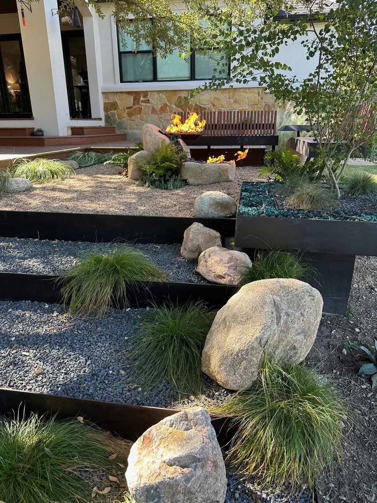
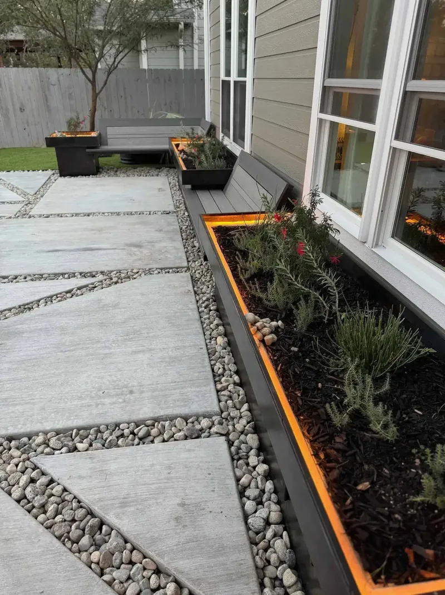
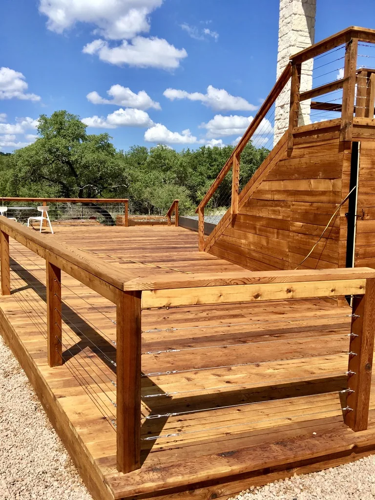
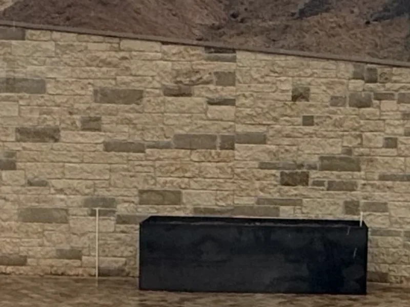
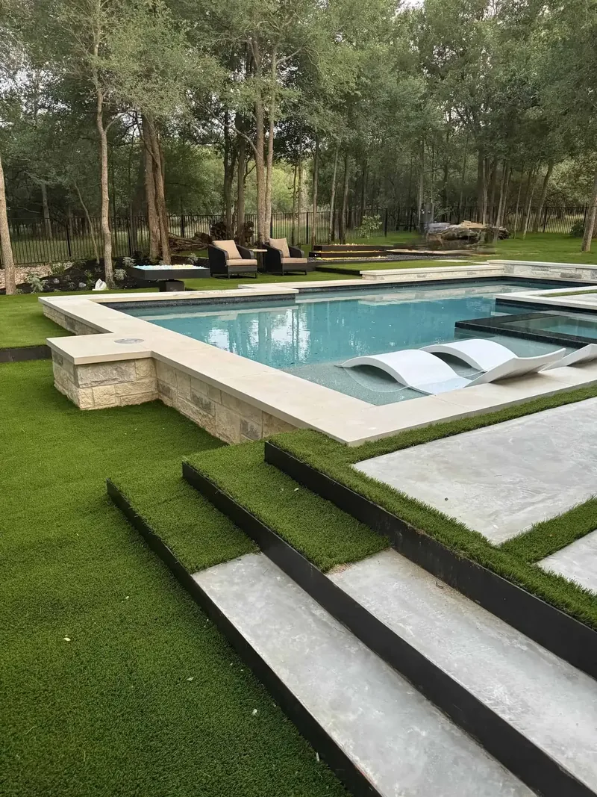
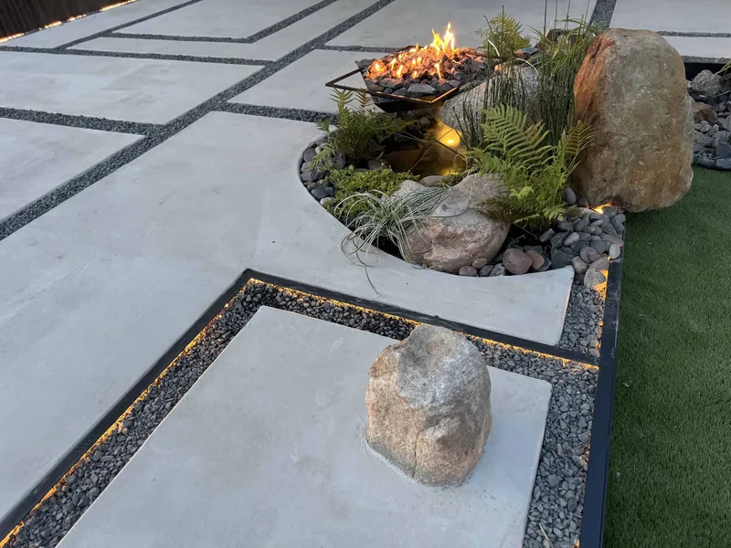

Red Agave Landscape designs and builds hardscaping in Austin, TX: patios, walkways, steps, driveways, retaining walls, decks, steel edging, fire pits, and water features. We build in five materials, which are steel, concrete, stone, wood, and gravel. Drainage goes in first, every patio sits on 6 to 8 inches of compacted crushed limestone, and our concrete is a 4,000 PSI mix with fiber mesh and rebar. We have built in Austin since 2009, and every project is built by our own crew. Each one starts with a free consultation, and the CAD plan is included. Call or text 512-695-7566.
What We Build
What Hardscaping Do We Build?
Everything in a yard that is built and not grown. One crew builds all of it, so the patio, the walls, and the steps meet where the plan says they meet.
Fire, water, and planters are hardscape too. Red Agave is the only company in Austin that builds floating welded steel fire pits, and the only one that builds custom LED planters with custom light channels. We carve fire pits into boulders, and we build water features fed from a boulder. See our fire pits, water features, and custom steel planters.
New to the word? Our post on what hardscaping is shows each material on a real build. Our post on paver patio installation shows pavers laid in a grid and large pavers poured in place.
Southeast Austin: concrete pads, a round water feature, two fire pits, and lit steel edging, all hardscape.
Materials
Which Hardscape Materials Do We Build With?
Five: steel, concrete, stone, wood, and gravel. Most of our yards use three or four of them together.
Steel
Steel holds an edge. We use quarter-inch steel, cut and welded on site, for retaining walls, terraces, steps, planters, and the edges of gravel and beds. Steel is thin, so a steel wall takes almost no room, and it can be cut to any line. See our retaining walls and custom steel planters.
Concrete
We form, pour, and finish our own concrete, in a 4,000 PSI mix with fiber mesh and rebar. Finishes are brushed, exposed aggregate, smooth trowel, and marbled concrete. We often pour a patio as separate pads, with gravel, river rock, or turf in the joints. Pads let rain soak in between them, and they read as lighter than one large slab.
Stone and Pavers
Travertine stays cooler than concrete in direct sun. Flagstone gives an irregular, natural floor, in Oklahoma flagstone, Pennsylvania bluestone, or Texas limestone. Manufactured pavers come in consistent sizes for clean patterns, and a single paver can be lifted and replaced. Limestone block builds walls, and boulders sit where one level turns into the next. Our guide to travertine, flagstone, and pavers compares them.
Wood
Wood is the right hardscape where the surface has to meet the house. A deck can be set at the exact height of a door, with no step. In East Austin we built a teak deck that runs flush from a screened porch to an outdoor kitchen. In Bee Cave, a wood deck with steel cable railing sits low on a Hill Country slope. See our custom decks.
Gravel
A gravel court is a floor that drains. Gravel needs an edge to stay where it is put, so our gravel courts are edged in steel. See our gravel landscaping ideas.



Steel walls at the Overlook at Lewis Mountain in Southwest Austin, diagonal concrete pavers with river rock joints in Circle C, and a wood deck in Bee Cave.
Patio Surfaces
How Do the Patio Surfaces Compare?
Each one suits a different house and a different use. We build all five, and we often mix them.
Surface
What It Is
Best For
Poured concrete
Formed and poured on site. Brushed, exposed aggregate, or smooth trowel finish
Modern houses, large patios, pads with gravel or turf joints
Marbled concrete
Concrete finished with a marbled surface
A patio that is the feature of the yard
Pavers
Manufactured units in consistent sizes, laid in a pattern
Clean geometry, driveways, surfaces you want to be able to repair
Travertine
Natural stone pavers, tumbled or honed
Pool decks and patios in full sun
Flagstone
Irregular natural stone, set in decomposed granite, in mortar, or on a slab
A natural, rustic floor
Mixing defines zones in a large patio: a concrete field with stone bands, a paver border around flagstone, or a steel edge where one material meets the next. See our patios page and our patio design ideas.
Below the Surface
What Goes Under a Patio or Walkway?
A base. The part of a patio you never see decides whether it stays flat.
Excavation: we dig to the depth the surface and its base need.
Subgrade: the soil at the bottom is compacted.
Base: 6 to 8 inches of crushed limestone, compacted.
Grade: the base slopes so water moves away from the house.
Surface: concrete is poured over it, or stone and pavers are set on it.
Austin clay swells when it is wet and shrinks when it is dry. A surface laid on bare clay moves with it, and that is how patios crack and heave. The compacted base is what keeps the surface still. Our concrete vs paver patio guide explains how each surface handles that movement.

A tumbled paver patio that runs to a limestone block wall and a black steel planter.
Soil and Slope
How Does Hardscape Handle Austin Soil and Slopes?
By being designed for the ground it sits on. Austin has two kinds of ground, and they behave differently.
East of I-35: expansive clay. It swells when it is wet and shrinks when it is dry, so bases are deep and well compacted, and water is kept moving away from slabs and walls.
West of MoPac: thin soil over fractured limestone. Rock is close to the surface, so levels are worked out around it, and footings bear on it.
On a slope, hardscape makes level ground. Low walls cut a hill into terraces, steps join the levels, and each terrace slows the rain before it reaches the next. Our retaining walls page shows how we terraced a slope at the Overlook at Lewis Mountain in Southwest Austin with three low steel walls.
Paths, Steps, Driveways
How Do We Build Walkways, Steps, and Driveways?
As part of the same plan as the patio, so every surface meets the next at the right height.
Walkways: concrete, flagstone, and paver walks connect one part of the yard to the next. Stepping pads set in gravel or turf do the same job with less paving.
Steps: we pour concrete steps, set stone treads, and weld steel risers. Step lights and steel handrails go in with them.
Driveways: poured concrete, pavers, or concrete with stone bands. A driveway is reinforced for vehicles, jointed for expansion, and graded to drain.
In Cedar Creek we set large concrete pavers in artificial turf beside a pool, with steel-edged steps below. See our post on pavers with artificial turf.

Cedar Creek: concrete pavers in turf beside the pool, and steps with steel risers.
Order of Work
What Gets Decided Before the Hardscape Goes In?
The water, then the levels.
Drainage is our first phase of construction. Water is designed before the patio, the planting, or the lighting, because everything built on top relies on it. See our drainage page.
The levels come next, and they are set on the plan. Hardscape fixes the height of every surface in the yard, so it goes in before the plants. Every Red Agave project starts with a free consultation, and the CAD plan is included. You can see our drawings on the design plans page, and a plan next to the finished yard in our post on landscape design build.
How We Build
How Is a Hardscape Project Built?
In six steps, by one crew.
01
Consultation and Plan
Free and on site. We walk the yard with you, measure it, and draw the hardscape on a CAD plan, which is included. See our landscape design page.
02
Drainage and Grading
We shape the ground and build the drainage first, so water has a place to go before anything is built on top.
03
Walls and Footings
Retaining walls, seat walls, and the footings for decks and structures go in while the ground is open.
04
Base
We compact the subgrade and lay 6 to 8 inches of crushed limestone under every patio and walk.
05
Surfaces
Concrete is formed, poured, and finished. Stone and pavers are set. Decks are framed and laid.
06
Edges and Finish
Steel edging is cut and welded on site, and gravel goes in. Planting and lighting are fitted to the hardscape last. See our landscape lighting page.
After Dark
How Is Hardscape Lit?
Along its edges. Light is planned with the hardscape, so the channels and the wiring go in while the ground is open.
Steel edges: LED strips trace the steel edge of a gravel court or a terrace.
Deck transitions: a line of light marks each change of level.
Joints: in Pearson Ranch in Northwest Austin, the gravel joints between the concrete pads are lit.
Planters: a steel planter can be lit under its rim, so it glows along its length.
Overlook at Lewis Mountain, Southwest Austin, at night: light along the steel edges of the gravel court and the deck.
Our Work
Where Have We Built Hardscape in Austin?
Across the Austin area. Six of our builds:
Overlook at Lewis Mountain, Southwest Austin, a bare slope: three steel terraces and two deck levels, with quarter-inch steel on every edge. See the case study.
Southeast Austin: concrete pads with dark gravel joints, a round water feature, and two fire pits. See the build.
Cedar Creek: large concrete pavers set in turf beside a pool, with steel-edged steps. See the case study.
Circle C, a deck and patio: concrete pavers cut on the diagonal with river rock joints, beside a long steel planter lit under its rim. See the case study.
Pearson Ranch, Northwest Austin: poured concrete patio pads with lit, steel-edged gravel joints and a boulder set in the slab. See the case study.
Bee Cave: a wood deck with steel cable railing beside steel-walled gravel terraces.

Pearson Ranch, Northwest Austin: concrete pads with lit, steel-edged gravel joints and a boulder set in the slab.
Red Agave Landscape designs and builds hardscape in Austin in steel, concrete, stone, wood, and gravel: patios, walkways, steps, driveways, retaining walls, decks, steel edging, fire pits, and water features. Every project is built by our own crew and starts with a free consultation, with the CAD plan included.
What is hardscaping?
The built part of a landscape: walls, patios, walkways, steps, driveways, decks, edging, fire pits, and water features. Plants, soil, and lawn are softscape.
What goes under a patio or walkway in Austin?
We excavate, compact the subgrade, and lay 6 to 8 inches of compacted crushed limestone, graded so water moves away from the house. Austin clay swells and shrinks, and this base keeps the surface flat.
What concrete do you pour?
A 4,000 PSI mix with fiber mesh and rebar. We form, pour, and finish our own concrete in brushed, exposed aggregate, smooth trowel, and marbled finishes.
Does hardscaping go in before planting?
Yes. Hardscape sets the levels of the yard, so it goes in first. Drainage comes before the hardscape, and planting and lighting are fitted to it.
Can hardscape fix a sloped yard?
Yes. At the Overlook at Lewis Mountain in Southwest Austin we cut a bare slope into three steel terraces and two deck levels, and every level is now usable.
Do you build walkways and steps?
Yes. We build walkways in concrete, flagstone, and pavers, and as stepping pads set in gravel or turf. We pour concrete steps, set stone treads, and weld steel risers.
Which patio surface stays coolest in the Austin sun?
Travertine. It stays cooler than concrete in direct sun, which is why it is used around pools.
Do you design the hardscape too?
Yes. The owner draws every plan, and our own crew builds it. The consultation is free, and the CAD plan is included.
What does hardscaping cost in Austin?
Every project is priced after a free on-site consultation. The size, the materials, the slope, and the access drive the price. Our cost guides explain each one.
Plan Your Hardscape
Owner-designed · Built by our own crew · Free consultation and CAD plan